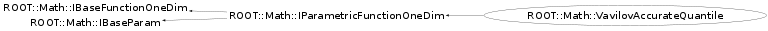

class ROOT::Math::VavilovAccurateQuantile: public ROOT::Math::IParametricFunctionOneDim
Class describing the Vavilov quantile function.
The probability density function of the Vavilov distribution
is given by:
\f[ p(\lambda; \kappa, \beta^2) =
\frac{1}{2 \pi i}\int_{c-i\infty}^{c+i\infty} \phi(s) e^{\lambda s} ds\f]
where \f$\phi(s) = e^{C} e^{\psi(s)}\f$
with \f$ C = \kappa (1+\beta^2 \gamma )\f$
and \f$\psi(s)&=& s \ln \kappa + (s+\beta^2 \kappa)
\cdot \left ( \int \limits_{0}^{1}
\frac{1 - e^{\frac{-st}{\kappa}}}{t} \,\der t- \gamma \right )
- \kappa \, e^{\frac{-s}{\kappa}}\f$.
\f$ \gamma = 0.5772156649\dots\f$ is Euler's constant.
The parameters are:
- 0: Norm: Normalization constant
- 1: x0: Location parameter
- 2: xi: Width parameter
- 3: kappa: Parameter \f$\kappa\f$ of the Vavilov distribution
- 4: beta2: Parameter \f$\beta^2\f$ of the Vavilov distribution
Benno List, June 2010
@ingroup StatFunc
Function Members (Methods)
public:
| virtual | ~VavilovAccurateQuantile() |
| virtual ROOT::Math::IBaseFunctionOneDim* | Clone() const |
| virtual double | DoEval(double x) const |
| virtual double | DoEvalPar(double x, const double* p) const |
| virtual unsigned int | NPar() const |
| double | ROOT::Math::IParametricFunctionOneDim::operator()(double x, const double* p) const |
| double | ROOT::Math::IParametricFunctionOneDim::operator()(const double* x, const double* p) const |
| ROOT::Math::VavilovAccurateQuantile& | operator=(const ROOT::Math::VavilovAccurateQuantile&) |
| virtual string | ParameterName(unsigned int i) const |
| virtual const double* | Parameters() const |
| virtual void | SetParameters(const double* p) |
| ROOT::Math::VavilovAccurateQuantile | VavilovAccurateQuantile() |
| ROOT::Math::VavilovAccurateQuantile | VavilovAccurateQuantile(const double* p) |
| ROOT::Math::VavilovAccurateQuantile | VavilovAccurateQuantile(const ROOT::Math::VavilovAccurateQuantile&) |
Class Charts
{kind=link}
{kind=link}
{kind=link}
{kind=link}

Function documentation
VavilovAccurateQuantile(const double* p)
Constructor with parameter values
@param p vector of doubles containing the parameter values (Norm, x0, xi, kappa, beta2).
void SetParameters(const double* p)
Set the parameter values
@param p vector of doubles containing the parameter values (Norm, x0, xi, kappa, beta2).
std::string ParameterName(unsigned int i) const
Return the name of the i-th parameter (starting from zero)
double DoEval(double x) const
Evaluate the function
@param x The Quantile \f$z\f$ , \f$0 \le z \le 1\f$
double DoEvalPar(double x, const double* p) const
Evaluate the function, using parameters p
@param x The Quantile \f$z\f$, \f$0 \le z \le 1\f$
@param p vector of doubles containing the parameter values (Norm, x0, xi, kappa, beta2).